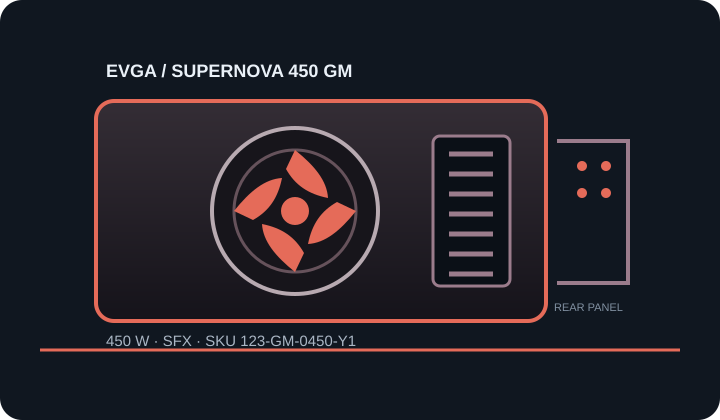

[ POWER CONVERSION // IDENTIFIED MODEL ]
EVGA SuperNOVA 450 GM (123-GM-0450-Y1)
Manufacturer SKU 123-GM-0450-Y1. Verify the label, region and production revision against EVGA documentation before selection or installation.

HIGH-VOLTAGE SAFETY: Disconnect mains before external inspection. Never open, probe or repair a PSU; hazardous voltage can remain after unplugging. Replace damaged or unidentified units as complete assemblies or use qualified service.
Model-specific input, output & fit
| Manufacturer model / SKU | EVGA SuperNOVA 450 GM; 123-GM-0450-Y1. | |||||||||||||||||||||
|---|---|---|---|---|---|---|---|---|---|---|---|---|---|---|---|---|---|---|---|---|---|---|
| Rated output / efficiency certification | 450 W continuous class; 80 PLUS Gold certified. Certification is not a guarantee of used-unit condition or host suitability. | |||||||||||||||||||||
| Form factor / ATX/SFX revision | SFX body; legacy ATX12V/SFX12V-era design, not ATX 3.x. Confirm exact revision. | |||||||||||||||||||||
| Mechanical envelope | Approximately 100 × 125 × 63.5 mm (depth × width × height). Verify mounting, fan intake and cable-bend clearance in the actual case. | |||||||||||||||||||||
| AC input | 100–240 V AC, 50/60 Hz as published by EVGA; verify the physical unit label and regional cord requirements. | |||||||||||||||||||||
| Maximum DC output | 450 W total; +12 V is rated up to 450 W. Per-rail and shared limits below remain controlling. | |||||||||||||||||||||
| DC output rails |
| |||||||||||||||||||||
| Connectors / cable set | Fully modular: ATX 24-pin ×1; EPS CPU 4+4-pin ×1; PCIe 6+2-pin ×2; SATA power and peripheral outputs are provided on separate modular leads (verify exact counts and bundle against the GM-series manual). Use the exact EVGA-approved cables for SKU 123-GM-0450-Y1. | |||||||||||||||||||||
| Fan mode / acoustics | 92 mm double-ball-bearing fan with EVGA ECO mode; low-load fan-off/quiet behavior depends on ECO setting and thermal conditions. No fixed acoustic rating is claimed here. | |||||||||||||||||||||
| Protection features | EVGA lists over-voltage, under-voltage, over-current, over-power and short-circuit protection. Never attempt to test protection circuits by opening or probing the unit. |
Compatibility & safe installation
- Check the 450 W total and +12 V limit against the host’s continuous and transient draw; this model’s two PCIe 6+2 connectors do not imply support for every GPU.
- Verify motherboard ATX main power, CPU EPS, GPU needs, case SFX mounting, fan intake clearance and cable bend room individually. An SFX-to-ATX bracket affects mounting only.
- PSU-side modular pinouts are not standardized. Never transfer cables from another EVGA or other-brand model based on plug shape; verify the exact cable compatibility table.
- Use the nameplate and model-matched guide if any rail, cable count, revision or regional input information differs.
- Do not open or electrically probe the PSU. Disconnect mains and replace a suspect assembly.
Revision & sourcing notes
This is the 450 W GM capacity variant. Do not transfer output limits, cable bundle or market details from another GM wattage model.
Published data describes the product as manufactured, not the remaining life or condition of a used unit.
Manufacturer sources
- EVGA SuperNOVA 450 GM product pageOfficial SKU, SFX form factor, 450 W output, 80 PLUS Gold, +12 V capacity and fan feature.
- EVGA official manuals and support portalManufacturer guide repository; select the SuperNOVA GM manual and verify cable counts, rails and input against the unit label.
Use exact model/revision sources and the unit label. This reference is not a service procedure or connector pinout.